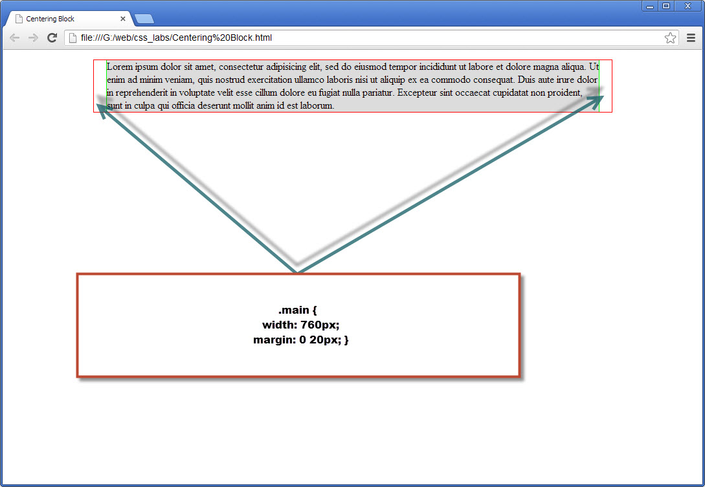
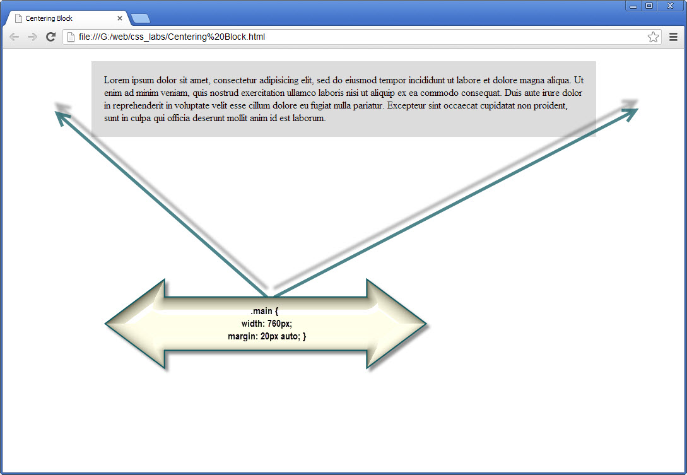

Иногда появляется задача расположить элемент внутри другого блока-контейнера (даже если этим контейнером является элемент body). В CSS не существует специального свойства для центрирования элементов, но вы можете решить эту проблему с помощью margin.
Если ваша разметка является строго выверенной, то все достаточно просто: высчитайте, какой промежуток вам необходим с каждой стороны от центрируемого элемента и задайте соответствующие margin.
Например, таким образом:

.main {
width: 760px;
margin: 0 20px;
}
В этом случае это всего лишь простая арифметика. На самом деле даже нет необходимости в правиле .main. Вместо этого можно (и нужно) применить padding для блока-родителя .contain:
.contain{
width: 760px;
padding: 0 20px;
}
Два решения - одинаковый результат.
В ситуации, когда внутренний элемент имеет фиксированную известную ширину, но неизвестна ширина родителя-конейнера, можно пять таки воспользоваться margin. Но тут требуется небольшая уловка.
Представим ситуацию, когда блок div является ребенком элемента-родителя body. Необходимо расположить div по центру body, но открытое окно браузера у разных пользователей может иметь разную ширину и вы не знаете, какая точно она будет. Так как внутренний элемент имеет фиксированную ширину, то особых проблем нет: просто нужно задать справа и слева margin: auto:

Этот прием работает, так как спецификация CSS говорит, что в случае фиксированной ширины элемента и автоматически определяемых margin-left и margin-right браузер вычисляет разницу между шириной элемента и шириной его контейнера, а затем делит полученную величина пополам (надвое); затем результат вычислений присваивает соответственно margin-left и margin-right. Таким образом блок центрируется.
Но таким образом нельзя расположить по центру блока текст. Если необходимо выполнить такую задачу, то нужно задать такие правила:
.main{
width: 760px;
margin: 20px auto;
text-align: center;
}
Обратите внимание, что если блок-потомок больше по ширине блока-родителя, браузер размещает блок (не контейнер) влево при направлении текста слева направо, и вправо при направлении текста справа налево.
Оцените статью: